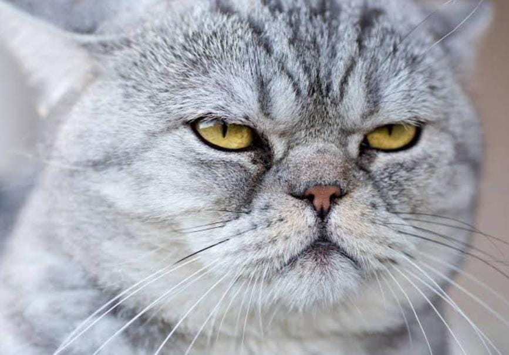
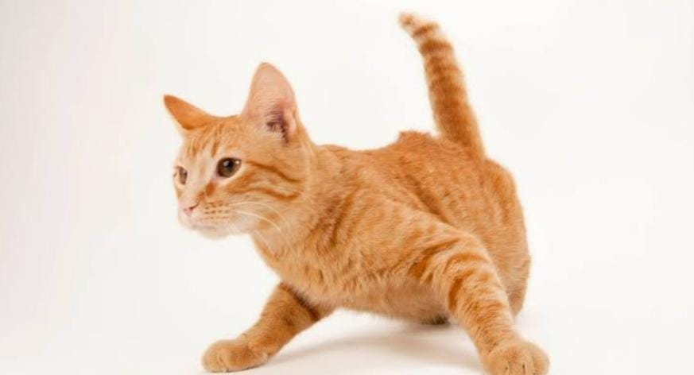

Instagram
Manias Gatunas
Pasteleria Gatuna
Los gatos, como ya hemos dicho en otras ocasiones, son animales muy independientes, pero les gusta mucho llamar la atención de sus dueños con pequeñas travesuras sus manías más características es su obsesión por amasar.
porque nuestros amigos felinos empujan sus patas delanteras de forma rítmica sobre nuestro cuerpo o el un cojín, en general, sobre cualquier superficie blanda o mullida.
¿Conocías estos detalles sobre los gatos naranjas?
- Los gatos Naranjas suelen ser machos.
- El gato atigrado naranja, o Golden Tabby, puede tener tres tipos de manchas en su pelaje.
- Atigrado: Es el más habitual y su pelaje ira formando lineas que se repartirán por todo su cuerpo.
- Los gatos naranjas suelen ser muy sociables y extrovertidos así como activos y juguetones
- Tiene un carácter muy alocado
- Si te distraes ya habrán vuelto tu casa un desastre

Rascador de gatos

Otra gran mania es el rascar. Además de marcar, con el rascado los gatos mantienen sus uñas en buen estado, parte fundamental tanto para la caza como para trepar, escapar y defenderse. Por otro lado, también les sirva para tonificar los músculos y estirar todo el cuerpo, ayudándoles a mantenerse ágiles y en forma.
Catleria

